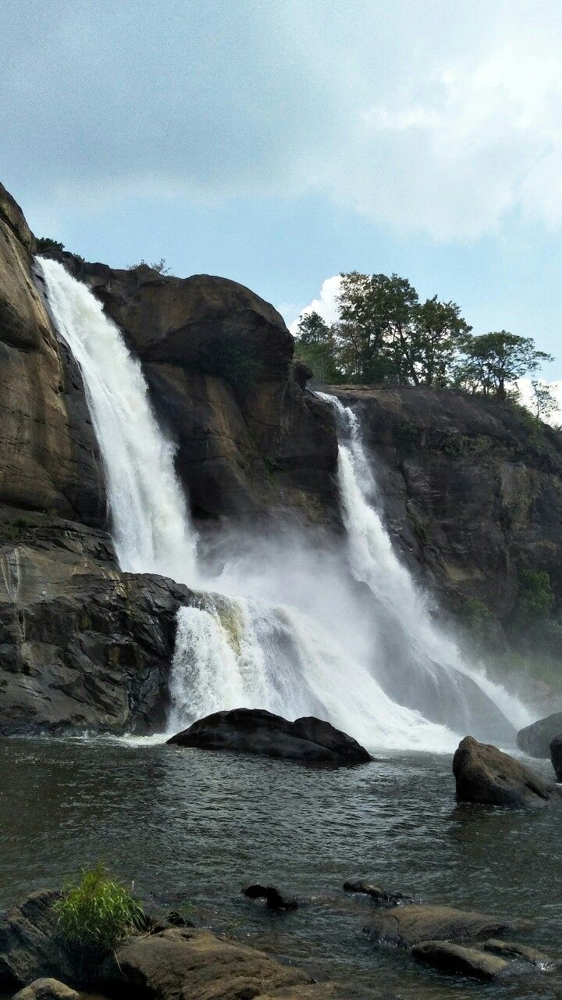
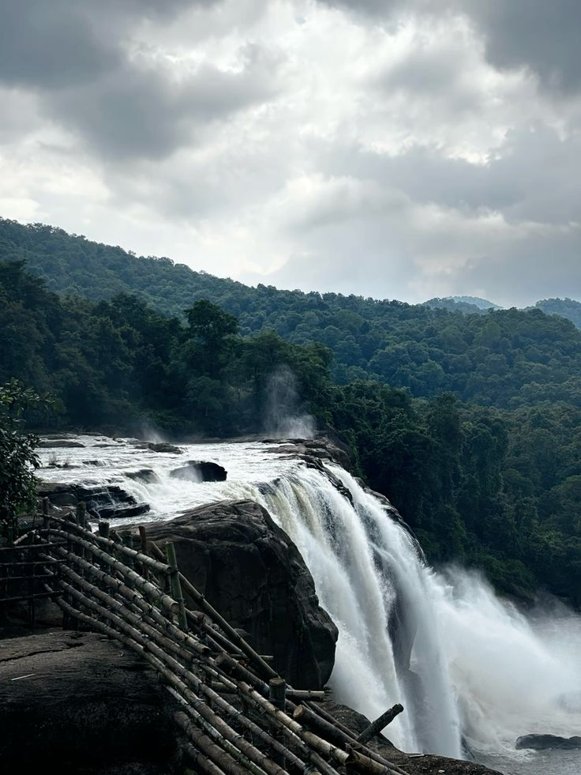
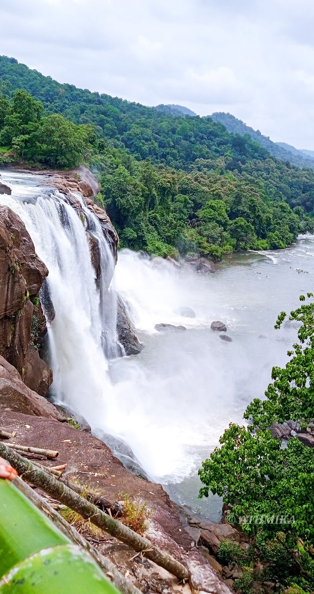
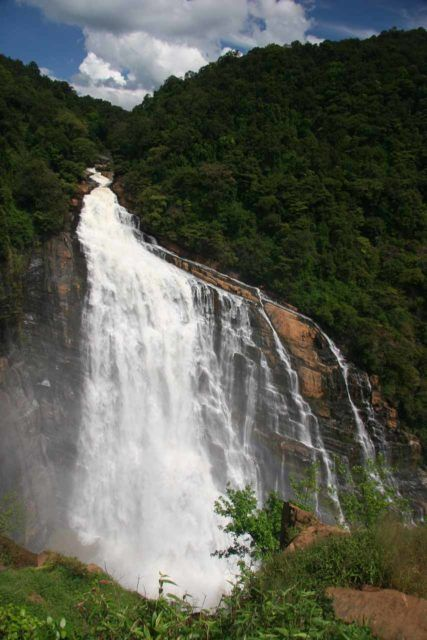
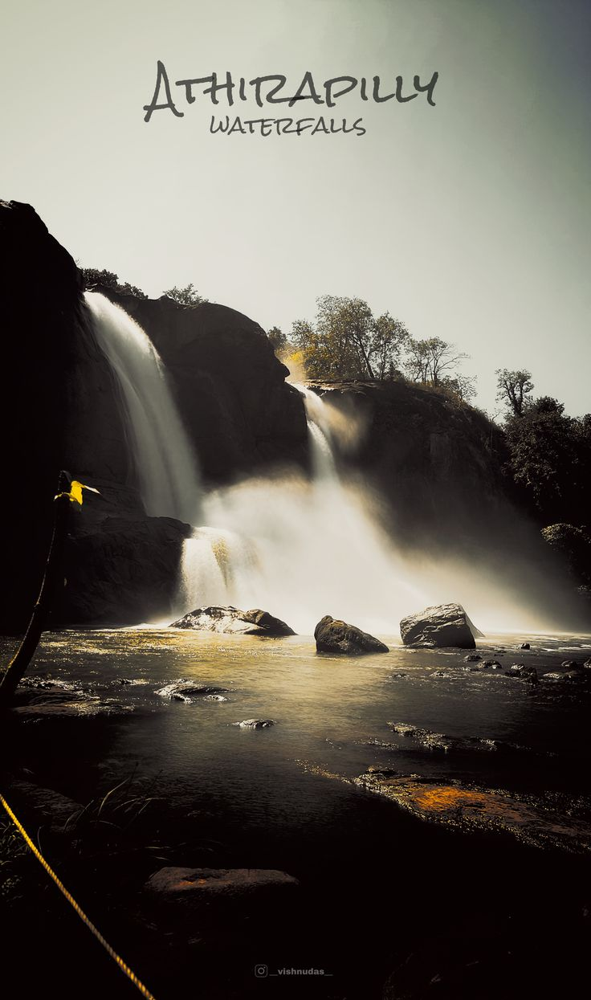
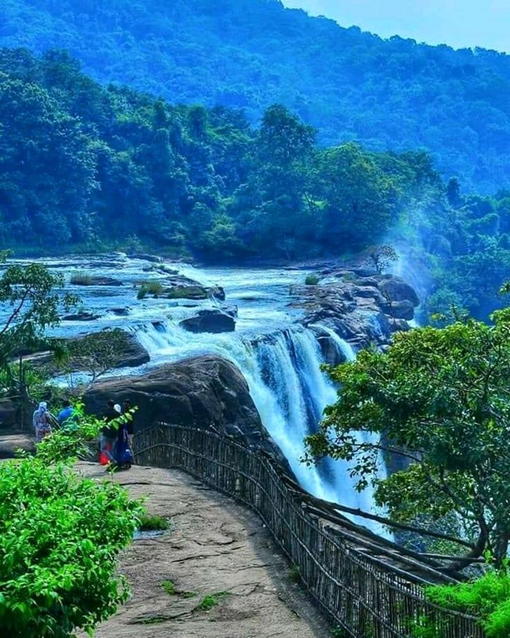
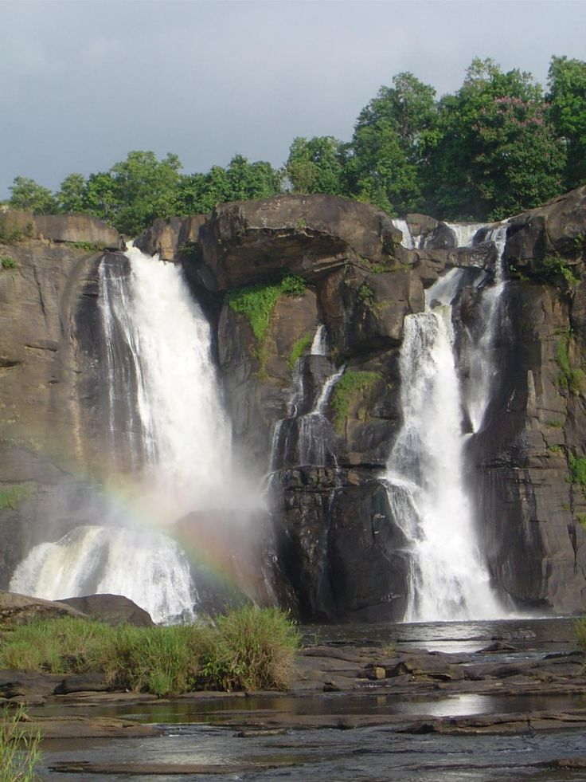
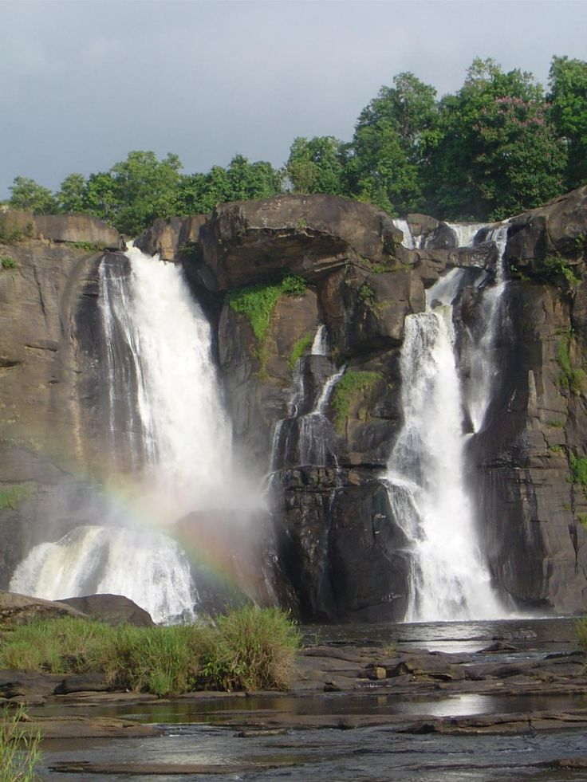
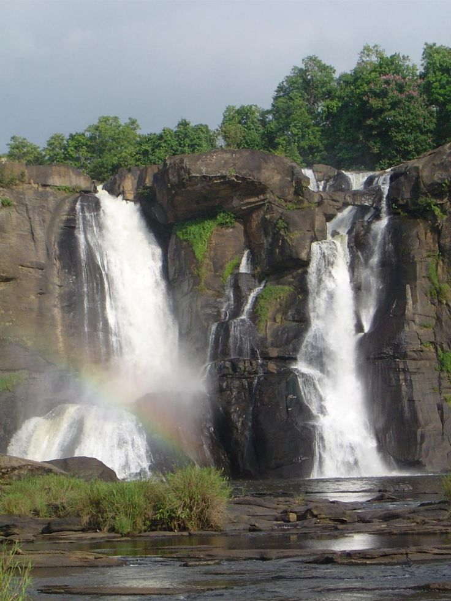
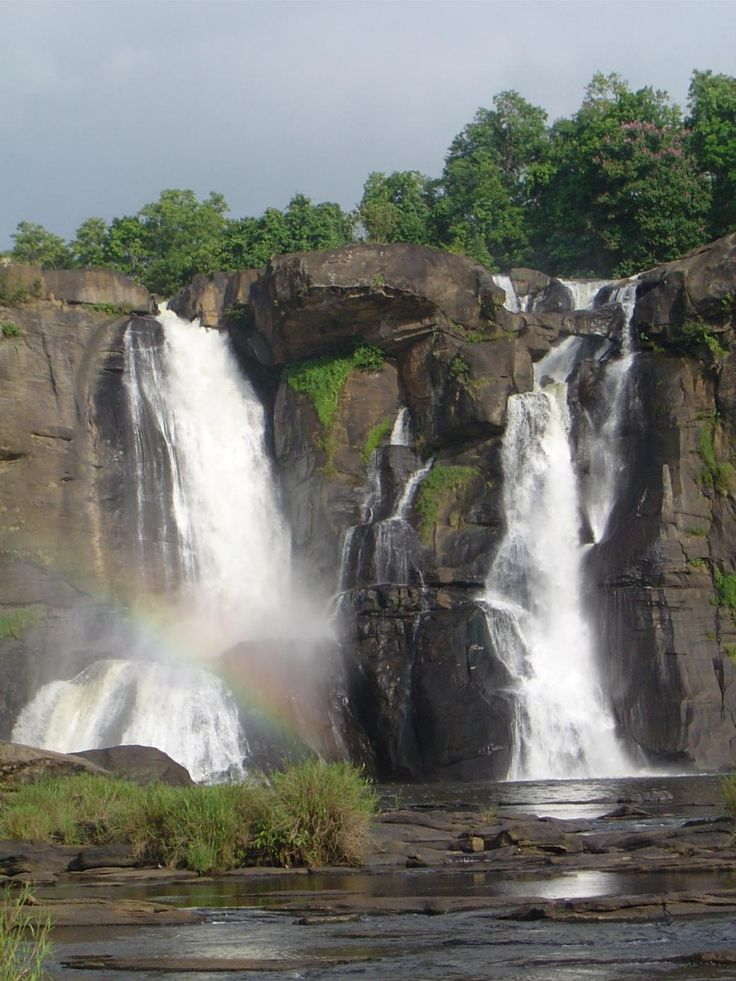

waterfall images






 


Athirappilly Falls, also known as the “Niagara of India”, is the largest waterfall in Kerala. Falling from a height of about 80 feet on the Chalakudy River, it is surrounded by dense forests and rich wildlife. The cool mist, roaring sound of water, and natural beauty make it one of the most popular tourist attractions in South India.
